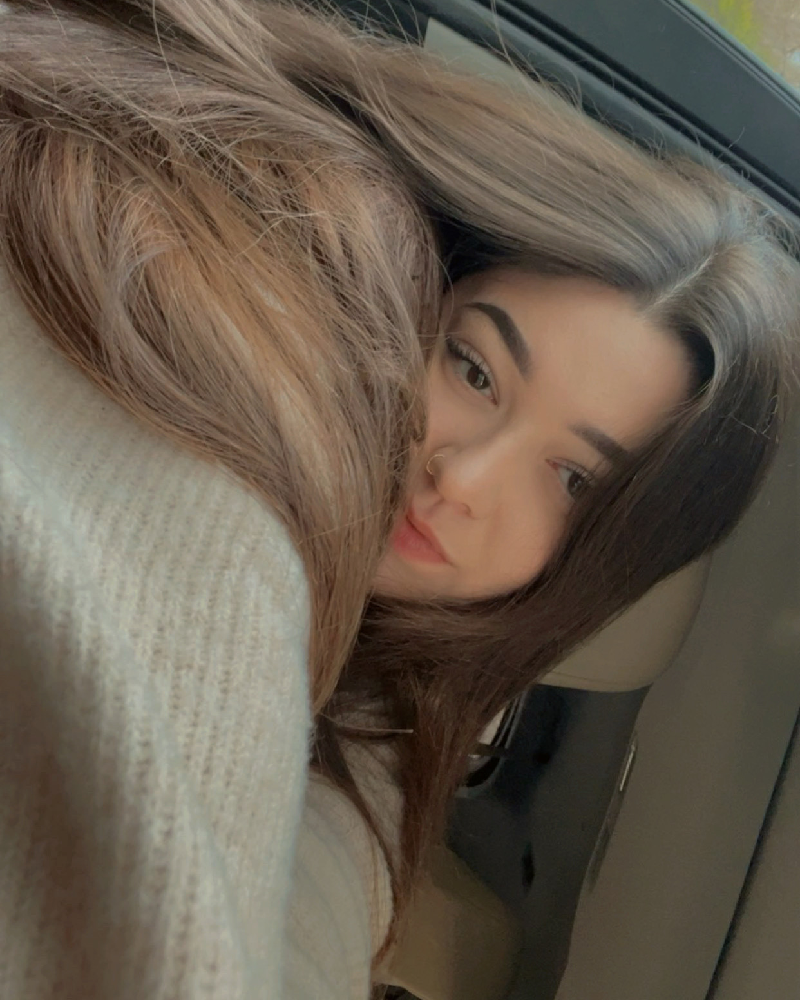

Kortney Littell, born 2002 in Bloomington Indiana, is a graphic designer and studio artist currently studying Studio Art at Indiana University. She primarily works in graphic design, photography, and 3D computer modeling. She began her interest in graphic design and photography early in her childhood when she started experimenting with digitally manipulating her own self portraits. What started as a hobby quickly grew into a passion for visual storytelling through art.
Her work typically deals with heavy subjects while balancing a playful tone. She is drawn to organic imagery and forms, and is often influenced by campy horror themes. In addition to creating conceptual projects and using design as a tool for storytelling, she also enjoys creating logos, packaging design, and other commercial design work. She continues to develop her portfolio and expand her skills through studio practice and experimentation while working in the Studio Art program at IU.
